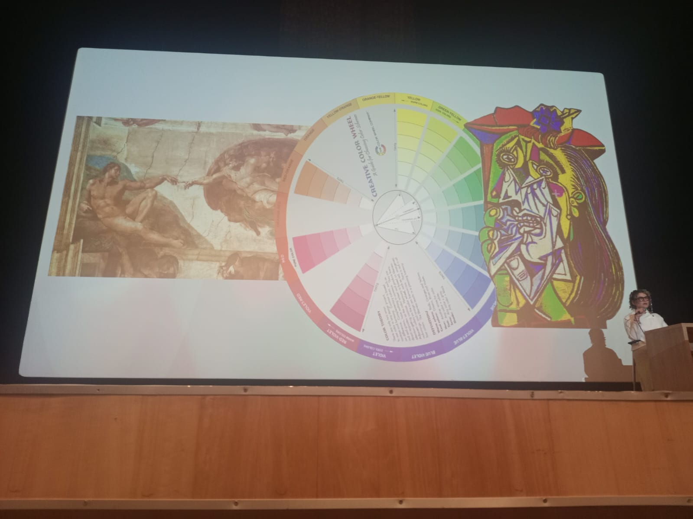
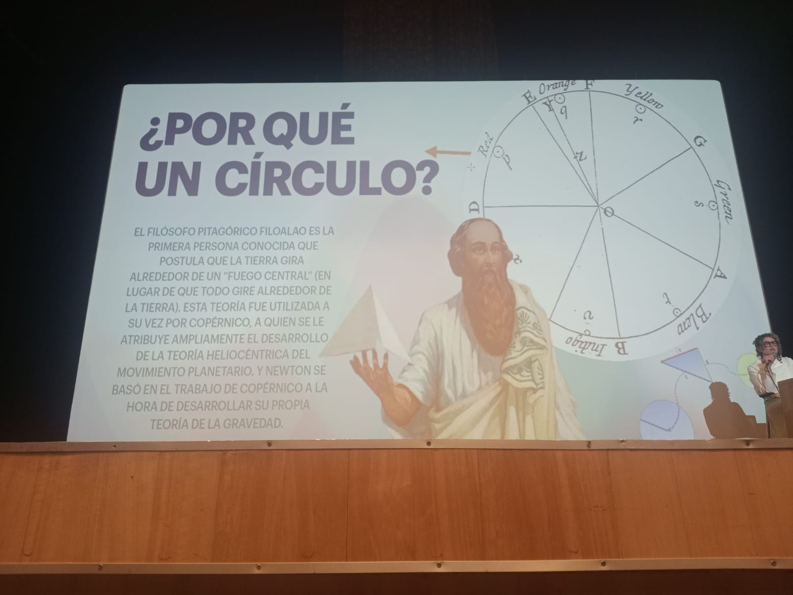

CÍRCULO CROMÁTICO



Analizando cómo los colores no solo se ven bien, sino que cuentan historias y mueven emociones en la pasarela.
Básicamente, es entender cómo los colores se llevan entre sí y cómo nos hacen sentir cosas diferentes. En el mundo de la moda, esto es la clave para que una colección tenga "punch". No es elegir por elegir, ¡es estrategia pura!


| Inglés | Español | Definición |
|---|---|---|
| Color Theory | Teoría del color | Estudio de cómo los colores generan percepción visual. |
| Pantone | Pantone | Sistema estandarizado de identificación del color. |
| Cloud Computing | Computación en la nube | Servicios y recursos ofrecidos por internet. |
| Fashion Design | Diseño de moda | El arte de aplicar estética a la ropa. |
| Sustainability | Sostenibilidad | Prácticas que buscan no agotar recursos naturales. |
| Circular Economy | Economía circular | Producción que busca reducir residuos. |
| Chromatic Circle | Círculo cromático | Representación gráfica de colores. |
| Visual Identity | Identidad visual | Elementos gráficos de una marca. |
| Textile Industry | Industria textil | Producción de fibras y telas. |
| Trend Forecasting | Pronóstico de tendencias | Predicción de modas futuras. |
| Pattern Making | Patronaje | Creación de moldes para prendas. |
| Haute Couture | Alta costura | Confección a medida de alta calidad. |
| Color Palette | Paleta de colores | Colores elegidos para un proyecto. |
| Saturation | Saturación | Intensidad o pureza de un color. |
| Contrast | Contraste | Diferencia visual entre tonos. |
Pura pasión, energía a tope y liderazgo.
Súper creativo y optimista.
Confianza, calma y profesional.
Lo natural, el equilibrio y crecimiento.
El color es comunicación. Ahora veo una prenda y pienso en toda la psicología que hay detrás.